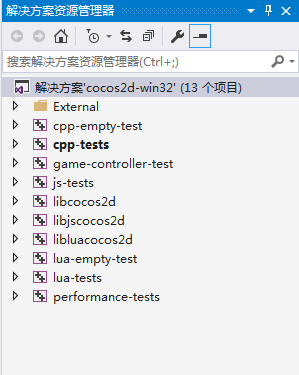
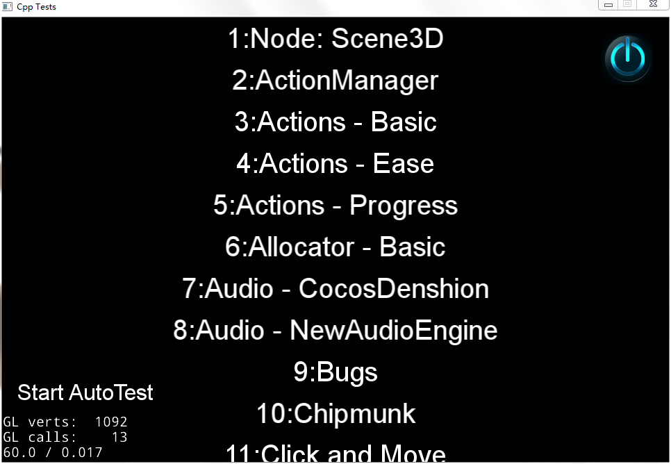
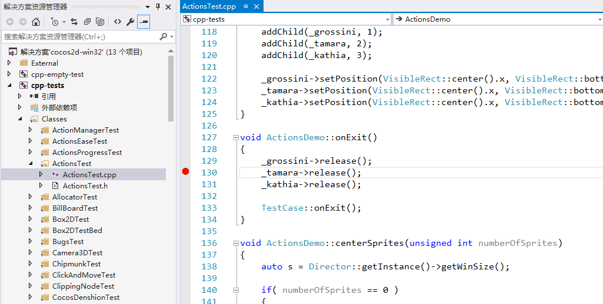
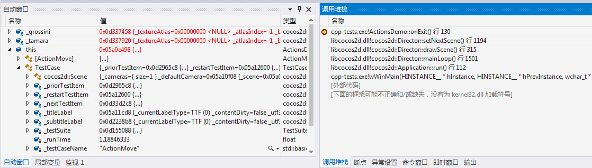

搭建开发环境 - Windows 平台
工具准备
- Visual Studio 2015，我们已在
Visual Studio 2015上做了版本功能的完整验证，建议用户使用此IDE，以防止由于版本不同引发编译或运行错误。下载参见：官网页面，Visual Studio 2015 发布页面。 - cocos2d-x v3.17，下载后解压，下载参见：Cocos官网页面
配置步骤
双击
cocos2d-x-3.17\build\cocos2d-win32.sln， Visual Studio 将打开此解决方案，解决方案打开后，可以看到这样的项目列表：
默认情况下项目列表中
cpp-tests加粗显示，表示是启动项目，此时点击菜单栏中本地 Windows 调试器进行项目的编译和运行。编译过程视机器性能不同，会花费 10-30 分钟的时间，编译完成后，将自动运行，运行成功将看到测试程序：
如何调试(Debug)
点击代码行左侧的空白，设置断点

以 debug 模式运行 cpp-tests
操作 App 触发断点，IDE 将卡在断点处，
Debug视图会自动跳出，可以查看运行堆栈和变量的值
FAQ
使用 Visual Studio 2017 运行 cpp-tests 注意事项
- 由于
Visual Studio 2017默认下载的组件可能与cocos2d-x-3.17.zip发布包中项目的配置不同，造成打开cocos2d-x-3.17\build\cocos2d-win32.sln会缺少组件，按照提示安装。 - 可能
Visual Studio 2017与Visual Studio 2015读取配置文件逻辑有差异，cpp-tests未自动设置为启动项目，在项目列表中右键单击此项目，选择设为启动项目。 编译时有工具集报错, 按照报错提示
右键单击该解决方案，然后选择“重定解决方案目标”操作，完成后右键单击项目重新生成。报错信息如下：error MSB8020: 无法找到 Visual Studio 2010 的生成工具(平台工具集 =“v100”)。若要使用 v100 生成工具进行生成，请安装 Visual Studio 2010 生成工具。或者，可以升级到当前 Visual Studio 工具，方式是通过选择“项目”菜单或右键单击该解决方案，然后选择“重定解决方案目标”。解决出现的问题后，
Visual Studio 2017可以正常运行cpp-tests，但也不能保证引擎所有功能都可以在本 IDE 正常运行。建议使用Visual Studio 2015与官方测试团队保持一致。
通过 CMake 使用模板工程需要了解的一点
通过 cocos new 新建 cpp，js，lua 三个工程，使用 CMake 生成 Visual Studio 的工程，cpp 和 js 的工程可以正常编译运行，但是 lua 的工程，编译成功却运行失败？
lua 工程使用了 simulator 的库，导致在 Visual Studio 内运行时，不能正确找到工作目录。需要手动修改工程配置，将项目属性中调试内的工作目录改为 CMake 生成目录下的 bin\TemplateLua\Debug。
Distributing a Cocos2d-x app on Windows
Note: this falls outside of the realm of Cocos2d-x. Please consult Microsoft resources for assistance.
If you try to run a game created with Cocos2d-x on a non-development machine, it may be required for this machine to have the Visual Studio runtime installed. The easiest way is to create an installer for your game, but it is possible to do it without by installing all required pieces manually.
Use Dependency Walker to check what DLLs your game requires.
Install the required Visual Studio runtime. Microsoft has now merged VS2015, 2017 and 2019 runtimes into one, which you can find here.
For the installer, check these posts:
InnoSetup (also shows you a sample for how to install the VS C++ runtime using it).
Sample InnoSetup script for Cocos2d-x here.
Troubleshooting
Please see this F.A.Q for troubleshooting help.